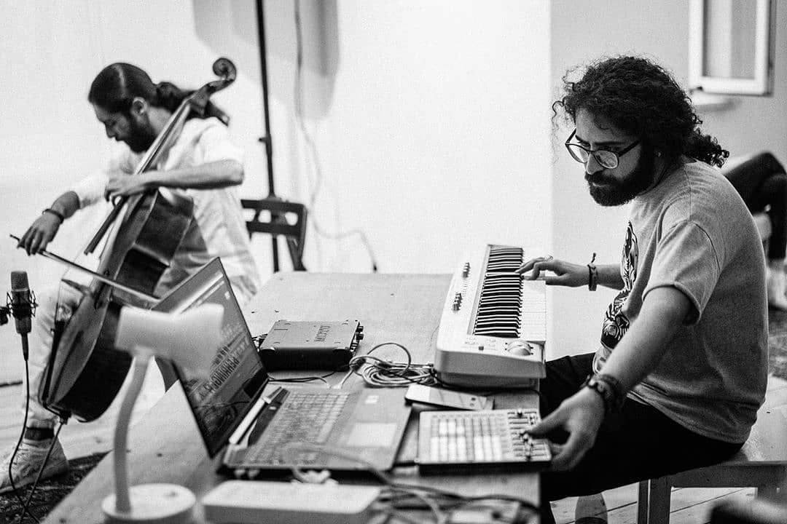

Arash Azadi english | русский | works | contact

Kairos - for solo violin, tape and live electronics (2015)
Y Generation - for Alto Saxophone, 5 Channel Tape, Live Electronics, Video Projector and Motion Capture Sensor (for 3 performers) (2015)
From Past-Present-Future to Freedom: A Musical Confession - for Alto Saxophone, Tape, Live electronics and two video projectors (2015)
Кайрос - для скрипки соло, кассеты и живой электроники (2015)
Поколение Y - для альт-саксофона, 5-канальной ленты, живой электроники, видеопроектора и датчика захвата движения (для 3 исполнителей) (2015)
От прошлого-настоящего-будущего к свободе: музыкальное признание - для альт-саксофона, кассеты, живой электроники и двух видеопроекторов (2015)
Designed by Arash Azadi